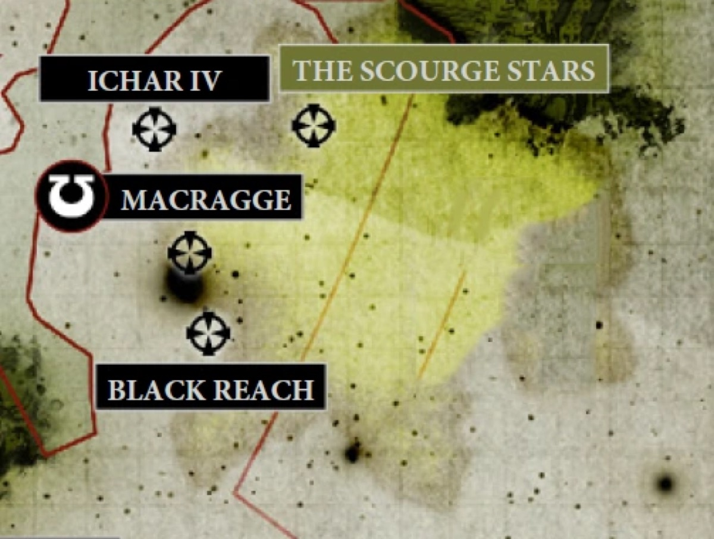

Scourge Stars
| Scourge Stars | |
|---|---|
| A stellar empire of Nurgle | |
 | |
| Type | Chaos-held stellar realm of three systems, within realspace |
| Segmentum | Segmentum Ultima, to the galactic north of Ultramar |
| Capital | None recorded |
| Notable worlds | Noxias (Hive World), Krantos IV (Hive World), Rottgrave (former Forge World), Pestifria, Vermioil |
| Governing body | Mortarion and the Death Guard, under the Garden of Nurgle |
| Status (as of M42) | Under Chaos control; contested by Imperial forces, Chaos Gods and Orks |
The Scourge Stars are a small, pestilential stellar realm made up of three former Imperial systems in the south of the Segmentum Ultima, to the galactic north of Ultramar. They fell to the control of the Plague God Nurgle after the opening of the Great Rift in 999.M41. The realm was the base from which the Daemon Primarch Mortarion and the Death Guard launched the Plague Wars against Ultramar.[1]
The three systems are Noxias, Verminox and Rottgrave, which all lie north of Ultramar. The realm lies in the path of the Great Rift's warp rift, which runs from the Eye of Terror towards the Hadex Anomaly. Imperial scouts gave the three systems their collective name as a "trio of sickly systems", ruled by the servants of the Plague God.[2]
History
[edit]Fall of Cadia and the Blackness
[edit]The Scourge Stars were born out of the fall of the Fortress World of Cadia to Abaddon the Despoiler in 999.M41. The destruction of Cadia cracked open the Cicatrix Maledictum, and unnatural aetheric energies spilled into realspace. Long-range astrotelepathic communication and interstellar travel became almost impossible across the southern Ultima Segmentum. Imperial accounts call this period the Noctis Aeterna, or "the Blackness".[1]
In the Blackness, Chaos cults rose in several prosperous systems north of Ultramar. The Hive Worlds of the region were toppled, and the cults summoned daemonic aid from the Realm of Chaos. The worlds fell under the influence of Mortarion, and so became the Scourge Stars, a foothold for the servants of the Plague Father in realspace.[1]
Early campaigns
[edit]When the Scourge Stars were first established, Death Guard warbands, called vectoriums, struck nearby worlds. Their purpose was to keep any enemy from disrupting Mortarion's muster for the invasion of Ultramar. On Daxar, the Apostles of Contagion met the Cadian Shock Troops of the 56th Cadian Heavy Infantry. The Cadians were driven back across the sulphur deserts, and Daxar fell to the Plague God after the Death Guard summoned hundreds of Beasts of Nurgle to break the Cadian line at Tarran's Pass.[1]
During the siege of Godorian, the Death Guard's Plagueburst Crawlers fired diseased munitions into the city's manufactorum vents. The smog drove the defenders into the open, where they could be killed. In a later battle at Krug's World, the Death Guard drew the WAAAGH! of Warlord Badsmak into a killing ground of Plaguespitters and Noxious Blightbringers, and destroyed the Ork host.[1]
Plague Wars
[edit]Mortarion's campaign against Ultramar, the Plague Wars of c. 000–012.M42, began with the "War of Flies". Virus bombardments and the Creeping Doom offensive against Espandor and Drohl wore down the Ultramarines and the Ultramar Auxilia. When Roboute Guilliman returned from the Indomitus Crusade, his counterattacks stopped the Death Guard across several systems, and the largest battles of the war followed.[1]
Two other commanders led armies out of the Scourge Stars. Ku'gath Plaguefather led the Daemon legions into the Tartella System and on to the Garden World of Iax. Typhus, the Herald of Nurgle, led a rot-armada of Renegades, cultists and loyal Death Guard Heretic Astartes that destroyed three of the six star fortresses guarding Ultramar's shipping lanes. Guilliman answered with the Spear of Espandor counterattack.[1]
War in the Rift
[edit]The war ended when the Chaos Gods Tzeentch, Khorne and Slaanesh invaded the Scourge Stars to contest Nurgle's new empire. Nurgle recalled his forces from Ultramar to defend his realm, and Mortarion withdrew the Death Guard from Iax under the cover of a Virus Bomb assault. The Dark Gods then fought one another in realspace, in what Imperial scholars call the War in the Rift. The greatest Daemons met at the Battle of Vigrid. The fighting ended only when the Chaos Gods agreed to Tzeentch's proposal to settle the war by a contest of champions.[1]
Systems and notable worlds
[edit]Noxias System
[edit]- '''Noxias''' (Hive World), the principal world of the realm.
- '''Krantos IV''' (Hive World).
- '''Illyan''' (Agri-world).
- '''Kabhar''' (Mining World).
- '''Olbhar''' (Feral World).
Rottgrave System
[edit]- '''Rottgrave''' (former Forge World, now a Hell-Forge).
- '''Muscaei''' (Industrial World).
- '''Pestifria''' (Knight World).
- '''Vermioil''' (Shrine World).
- '''Foetid Hive''' (naval base).
Verminox System
[edit]No worlds of the third system are recorded in Imperial accounts.
Governance
[edit]The realm is governed as a fief of Nurgle, through the Death Guard and the Daemon Primarch Mortarion. Its worlds are ruled by cults of corruption and by the Death Guard's vectoriums. No Imperial authority exists in the Scourge Stars, and the Imperium has never recognised the realm.[1]
Timeline
[edit]| Date | Event |
|---|---|
| 999.M41 | The fall of Cadia cracks the Cicatrix Maledictum; the Blackness descends on the southern Ultima Segmentum |
| 999.M41 (after the Fall) | Chaos cults rise and the Hive Worlds north of Ultramar are toppled |
| Early 42nd millennium | Death Guard warbands strike Daxar and nearby worlds in preparation for the invasion of Ultramar |
| c. 000.M42 | The Plague Wars begin with the War of Flies |
| c. 000–012.M42 | Guilliman's counterattacks halt the Death Guard; the March of Plagues |
| c. 000–012.M42 | The Chaos Gods invade the Scourge Stars; Nurgle withdraws from Ultramar |
| Era Indomitus | The War in the Rift between the Dark Gods; the Battle of Vigrid |